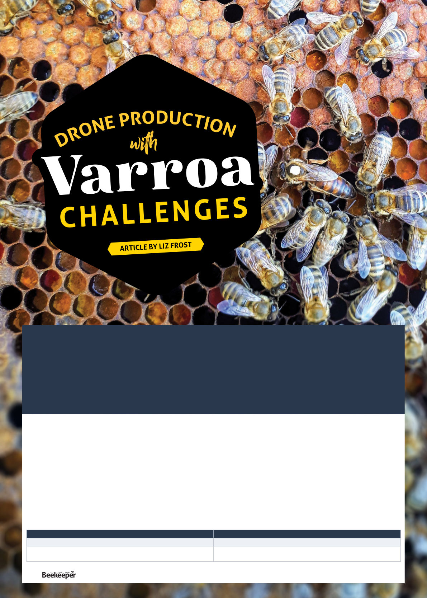

ARTICLE BY LIZ FROST
Ensuring quality queen mating is more important than ever where varroa is
established. Varroa is a significant new stress to drone production and quality
queen mating. Whether you’re a large-scale queen breeder or a beekeeper who
annually makes a few “walk-away” splits, not purposely grafting and raising
queen cells, the impact of varroa on the drone supply around your hives is
something you’ll need to proactively manage once varroa is established. Where
varroa is established in Western Sydney, drone numbers have been decimated.
Michael Duncan has monitored five drone congregation sites
around Western Sydney University’s Richmond NSW campus
over the past decade. A drone congregation area is where both
drones and queens fly to mate when they’re sexually mature.
In Australia, mating flights typically happen between 10:00am
and 5:00pm, during clear weather, temperatures over 20°C, and
wind speeds of less than 19 km per hour. Drone ballooning
may capture drones representing hives from within a 44km2
area.
Drone numbers caught at Richmond drone congregation
areas between 2015 to 2025 have changed dramatically since
varroa established in the area. The results from this year (March
2025) and the previous decade are:
Two Australian studies suggest an average of 28 drone mates
per virgin queen is the norm. Based on a 28 drone mating, the
Western Sydney Uni 500+ drone catch would only be sufficient
to mate 17 virgin queens. The 2025 drone catch at Western
Sydney Uni wasn’t enough to even mate one queen sufficiently.
The following dot points are causes and effects of poorly
mated queens.
Poorly mated queens:
• Not enough drones available to mate with
DATE
# DRONES
Feb/March 2015-2024
500+ drones caught at each of 5 drone congregation areas on average.
March 2025
6 drones caught at 1 drone congregation area. 0 drones caught at 2
drone congregation areas.
32 |
| Vol. 127 | No. 4